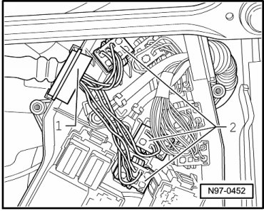
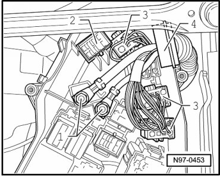
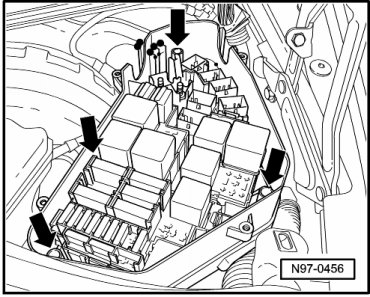
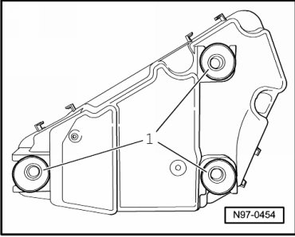
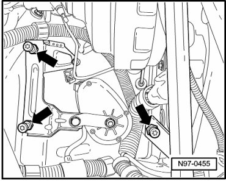

Left Plenum Chamber E-Box
Left Plenum Chamber E-Box
CAUTION!
When disconnecting and connecting the battery, always perform the work procedure as described in the repair information --> [ Battery, One-Battery Layout, Disconnecting and Connecting ] Battery, One-Battery Layout, Disconnecting and Connecting. Not adhering to sequence will result in the deactivation of Main Battery Switch -E74- and subsequent damage to electrical system components.
Removing
CAUTION!
When disconnecting battery, procedure must always be followed as described in the repair information --> [ Battery, with Auxiliary Battery or Two-Battery Layout, Disconnecting and Connecting ] Battery, with Auxiliary Battery or Two-Battery Layout, Disconnecting and Connecting. Not adhering to sequence will result in the deactivation of Main Battery Switch -E74- and subsequent damage to electrical system components.
- Disconnect battery --> [ Battery, One-Battery Layout, Disconnecting and Connecting ] Battery, One-Battery Layout, Disconnecting and Connecting.
- Remove driver side wiper arm --> [ Driver Side Wiper Arm, Removing ] Windshield Wiper System
- Remove front passenger side wiper arm --> [ Passenger Side Wiper Arm, Removing ] Windshield Wiper System
- Remove plenum chamber cover --> [ Plenum Chamber Cover, Removing ] Windshield Wiper System.
- Remove mounting bolts - arrows - and remove E-Box cover.

• The number of multi-pin harness connectors - 2 - can deviate from the illustration depending on vehicle equipment.

- Disconnect multi-pin harness connectors - 2 - and remove housing gasket - 1 - upward out of E-Box.
• The number of multi-pin harness connectors - 3 - and number of threaded connections - 1 - can deviate from the illustration depending on vehicle equipment.

- Loosen threaded connections - 1 - of supply wires and remove them from connecting pins.
- Unclip connector - 2 - from E-Box.
- Disconnect multi-pin harness connectors - 3 - and remove housing gasket - 4 - upward out of E-Box.
- Remove mounting bolts - arrows - from upper section of E-Box.

- Remove upper section of E-Box upward.
- Unclip lower section of E-Box from vehicle.
Installing
Install in reverse order of removal, observing the following:
- Insert securing rubbers - 1 - into lower section of E-Box.

- Clip lower section of E-Box with securing rubbers on pins - arrows - on vehicle.

• Sleeve seals for wires must be inserted into guides of E-Box.
• Wires must not be pinched when assembling upper and lower sections of E-Box.